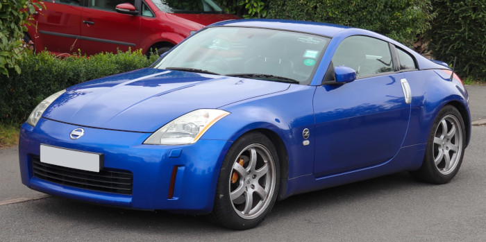
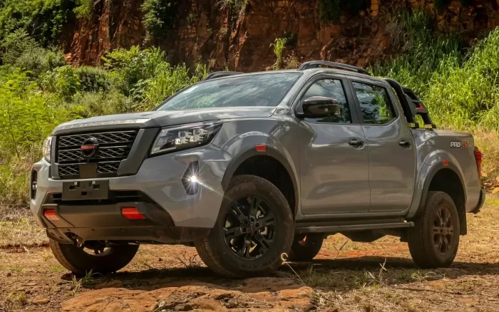
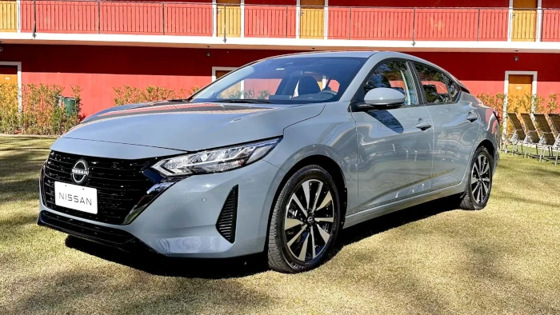

NISSAN FUNDAÇÃO
A Nissan é uma fabricante japonesa de automóveis resultante de uma fusão entre Datsun e Prince. A Nissan está listada no Nikkei 225 e é a terceira maior fabricante japonesa de automóveis depois da Toyota e Honda em capitalização de mercado. Foi listada pela Forbes como a 132ª maior empresa do mundo na lista Global 2000 de 2019. Em 1999, a Renault constituiu a aliança Renault-Nissan com a Nissan e, desde então, detém 43,5% das ações da Nissan. Em 2016 a Renault-Nissan adquiriu uma participação de 34% na Mitsubishi tornando parte da aliança. Além disso a Nissan também é dona das marcas Infiniti e Nismo. Saiba mais em https://pt.wikipedia.org/wiki/Nissan
NISSAN 350Z
O 350Z (conhecido no Japão como Fairlady Z33), é um carro esportivo fabricado pela Nissan, produzido entre 2001 e 2009. O 350Z é o quinto da geração da linhagem Nissan Z, inicialmente introduzido em 196 (como um modelo ano 1970) como o Datsun 240Z. O 350Z entrou em produção no final de 2001. O 350Z entre 2003 e 2007 foi fabricado com o motor VQ35DE de 280 V6 de 3.5L e entre 2008 e 2009 com o famoso VQ35HR de V6 com os 312 cv, este atingindo os 100km/h em apenas 6,54 segundos. O carro tem modelos da subdivisão NISMO (Nissan Motorsport) sendo que esses tem modificações pensadas em um desempenho esportivo como motor mais potente, rodas NISMO, aerofólio e alguns outros detalhes no interior e exterior do carro.
NISSAN FRONTIER
A Nissan Frontier (na Europa e Ásia, Nissan Navara) é uma picape média da Nissan, foi inicialmente desenvolvida para o mercado norte americano. No Brasil, estreou no final da década de 1990 e foi o primeiro produto da Nissan a ser fabricado no país, a partir de 2002, em São José dos Pinhais (PR). No ano de 2016 foi a 11ª picape mais vendida no mundo, com um total de 121.320 unidades vendidas.
NISSAN GTR R34

O Skyline GT-R R34 (carro sigma) é uma versão esportiva de grande prestígio do Nissan Skyline. A versão GT-R possui o motor Nissan RB26DETT, de 6 cilindros em linha com biturbo. A sigla GT-R surgiu depois de uma vitória da Nissan em 1964 com o S54 2000 GT-B. Em 1973 o modelo GT-R deixou de ser produzido. 16 anos depois a Nissan traz a sigla GT-R de volta com o modelo Nissan Skyline GT-R R32 com o motor RB26DETT e tração 4WD e um motor de 280 HP. A geração R32, também chamada de Godzila, foi até 1994, ano em que foi substituída pelo R33 que muitos reclamaram devido ao peso e tamanho. Em 1998 o R33 foi substituído pelo R34, o mais perfeito GT-R devido a potencia do R33 e tamanho reduzido próximo ao R32. Sua produção foi interrompida em 2002. Em 2007 a Nissan divulgou o lançamento de um novo modelo GT-R em dezembro após o Tokyo Motor Show com o motor VR38DETT, um motor 3.8 de 6 cilindros em V, dois turbos e 480 HP.
NISSAN GTR R35

O Nissan GT-R é um modelo de automóvel superesportivo produzido pela Nissan, foi anunciado em 2001 com o objectivo de dar sequencia a marca GT-R (que surgiu na década de 1960 que fez sucesso com o Skyline), em 6 de Dezembro de 2007 foi oficialmente lançado no Japão, em 2008 chegou aos Estados Unidos, Canadá e Portugal, no resto do mundo apenas em 2009. O modelo 2007 possui um motor 3.8 V6 Biturbo com potência de 480Cv (362 kW) e 59.95Kgfm (588,0N.m.) de torque, acoplado a uma transmissão automatizada de 6 marchas com dupla embreagem e sistema de tração AWD ATTESA E-TS®, esse conjunto fornece desempenho capaz de levar os 1740Kg de 0-100 km/h em 2.7s e tem velocidade máxima de 385 à 395 km/h.
NISSAN SENTRA
O Nissan Sentra é um carro sedan médio produzido pela montadora Nissan, cujas origens remontam a 1982, sendo geralmente uma versão de exportação da japonesa Nissan Sylphy. O nome "Sentra" não é utilizado no Japão. Motor: 2.0 16v 140 cv a 5100 rpm torque 20 kgfm a 4800 rpm Transmissão: CVT Xtronic ou manual de 6 velocidades.